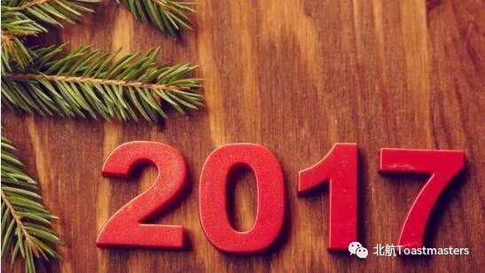

Time: 19:30-21:30, Friday, 15th Dec
Venue: Room A208, New Main Building, Beihang University
---------------------------------------------------------------------------------------------------------------
table topic
choice

How time flies, it's time to go to the new year. No matter who you are, it is impossible to avoid this fact that 2017 will be passed son. At this moment, please focus on the last few days of the calendar , let's begin the memory of 2017.
-------------------------------------------------------------------------------------------------------------------------------
Prepared speech
Winston
A diary is a good friend of silence, whether you are in anger, ecstasy, sad, confused or not, you can regard the diary as a friend to share your mind.Similarly, at a very happy moment, you also just write a diary to recall a moment of happiness, thus your happiness will extend. She is just a friend who can halve sorrow and double happiness.
-------------------------------------------------------------------------------------------------------------------------------

BeihangToastmasters Club is a students' union. At the same time, we belong to a non-profit international organization calledToastmasters International.
Toastmasters International (TI) is a non-profit educational organization that operates clubs worldwide for the purpose of helping members improve their communication, public speaking, and leadership skills.You can find us by the following map of Beihang University.

https://mp.weixin.qq.com/s/mObaE-hjTv6Loiy7Lg3s2Q
本页为抢救式本地归档，图文已永久保存。